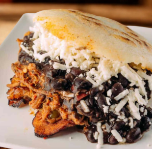

Home
Pabellon

Description
Pabellón Criollo is the classic Venezuelan plate, representing the flag's colors.
It's a hearty meal consisting of shredded beef, black beans, white rice, and fried sweet plantains,
all served side-by-side on one plate.
Ingredients
- -Precooked corn flour (e.g., Harina P.A.N.)
- - Warm water
- - Salt
- -Oil (for cooking)
- -Cheese
- -Shredded Beef or chicken
- -Black Beans
- -Platain
Step by Step
- Meassure the Ingredients
- Mix the Dough
- Knead and Rest
- Shape the Arepas
- Coon on Skillet
- Bake for Fluffiness(Optional)
- Slice and Fill